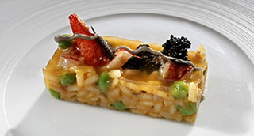

Risotto cremoso de berberechos con ajo tostado, perejil y azafrán.
"El más famoso de los arroces melosos, en este caso realzado por aromas muy Mediterráneos"

| Dientes de ajo | 4 un. |
| Aceite de oliva | 50 ml. |
 |
|
| Berberechos | 500 gr. |
| Laurel | 1 hoja |
| Jerez seco/td> | 50 ml. |
|
|
| Arroz Carnaroli o Arborio | 320 gr. |
| Cebolla Figueres | 1 dt. |
| Caldo de pescado | 900 ml. |
| Parmesano rallado | 40 gr. |
| Mantequilla | 40 gr. |
| Azafrán | 4 hebras |
| Pimienta Cayena | 1/2 cc. |
| Perejil picado | 1 cs. |
- Pelar los ajos y laminarlos.
- Colocar los ajos con el aceite frío y poner a fuego lento hasta que los ajos estén dorados y suban a la superficie.
- Retirar del aceite sobre papel absorbente. Colocar los ajos en un mortero y reservar el aceite.
- Lavar los berberechos sobre un chorro de agua fría hasta eliminar totalmente la arena.
- En una cazuela colocar el Jeréz y la hoja de laurel, añadir los berberechos, tapar, poner a fuego medio hasta que los berberechos estén abiertos.
- Sacar de los caparazones, colocar en un bol, filtrar con un colador el jugo de cocción y añadir a la carne de los berberechos.
- Machacar en el mortero con un poco de sal, el ajo tostado, el azafrán y la pimienta de Cayena, diluir con un poco de jugo de cocción de los berberechos.
- Picar la cebolla muy fina, colocar a fuego lento junto a la mantequilla y el aceite de ajo. Dejar cocer hasta que la cebolla esté ligeramente tierna.
- Añádir el arroz y nacararlo (que coja una ligera irisación) aproximadamente un par de minutos.
- Mojar con el resto de caldo de berberechos y dejar reducir a seco.
- Ir añadiendo poco a poco el caldo de pescado y remover con cuidado. La cocción total del arroz debe ser de 16'.
- Una vez finalizado el tiempo agregar la majada los berberechos y el parmesano para "enmantecarlo". Dejar cocer 2' más.
- Tirar el perejil picado, rectificar de sal y dejar reposar 2'.
- Servir bien caliente.